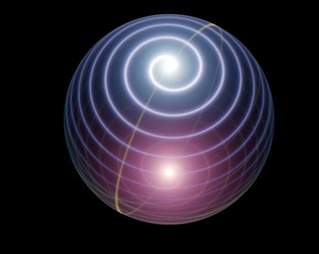
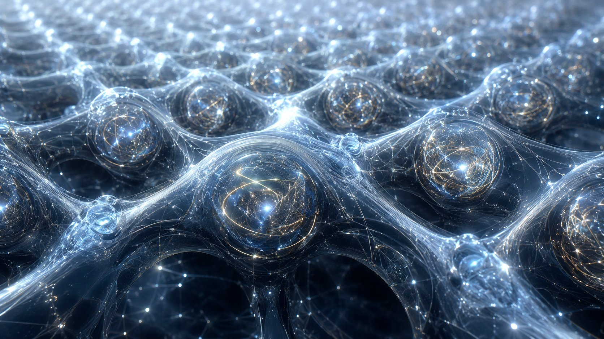
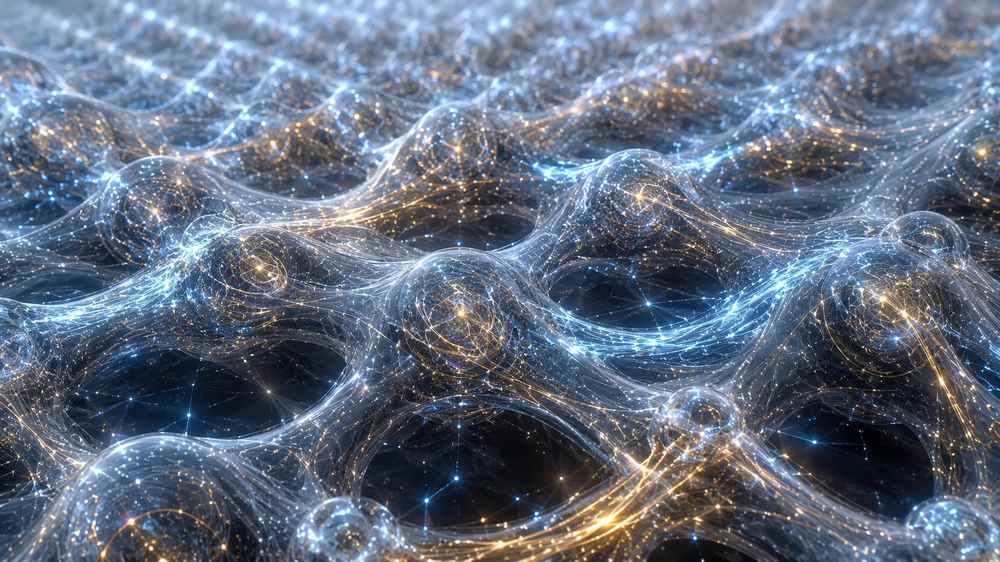
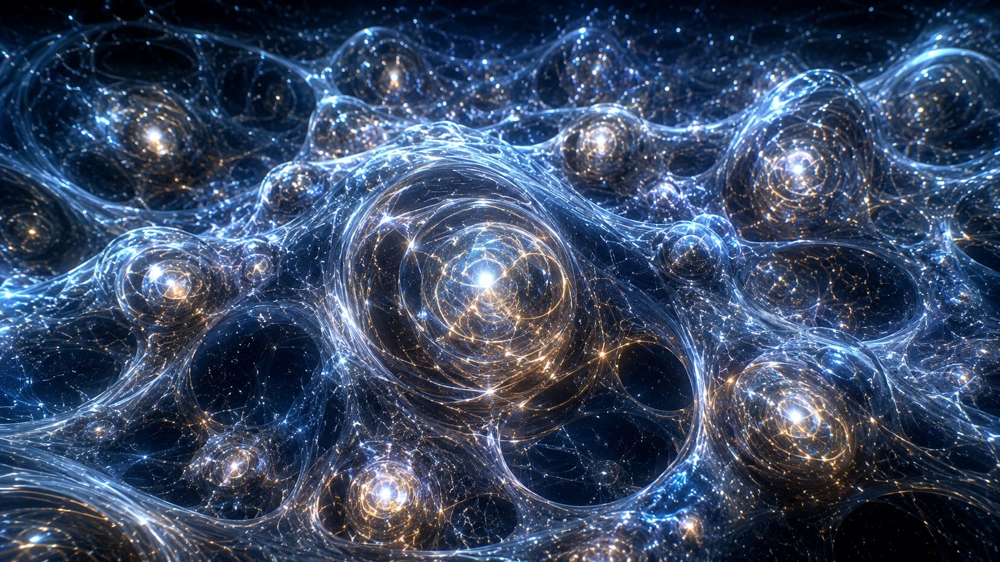

00What this companion is
The monograph derives physics from one structural fact. This site lets you run that derivation: turn the dials, watch the breathing flow, and check the validators against real data.
The starting point is a single conserved current on a bulk that the boundary
can only read through a projection Π of rank five. Because
Π is non-invertible, reading the bulk destroys information.
Everything observable — the metric, time, the gauge fields, the
fine-structure constant — is a necessary residual of that loss, not an
added ingredient.
No pre-existing spacetime. Holography is micro-local (each cell), not global — the distinction from LQG and AdS/CFT is drawn in the monograph's related-work appendix.
01The thread, in one read
Five steps take you from the conservation law to a hydrogen atom. Each is a chapter; each has a tool here.
| step | what happens | structural object |
|---|---|---|
| 1 | The boundary reads the bulk through a rank-five projection; information is lost. | Π, kerΠ ≠ 0 |
| 2 | The two surviving channels breathe on a locked surface, conserving one product. | ξη = α−1 |
| 3 | Each cell becomes a shell with a single phase that advances at the tick rate. | θ = gd(Γτt) |
| 4 | Two cells glue when their shell phases lock — the boundary current cancels. | |δω| ≤ K |
| 5 | The first stable lock is a bound proton–electron pair: hydrogen. | B⋆ = 8 |
02The six-layer qubit
The elementary object is not a point. It is a layered structure, each layer carrying its own algebra, symmetry, and physical readout.
| # | layer | algebra | symmetry | reads out |
|---|---|---|---|---|
| 1 | core S¹χ(τ) | Heegner | U(1)τ | pre-physical phase |
| 2 | kernel kerΠ | Eichler / Ramanujan | SU(3)c | matter / memory |
| 3 | sphere S²χ | Majorana / Clifford | SU(2)ξ | spin / CPT |
| 4 | shell DW₁+DW₂ | Fibonacci / TL / B₃ | rank 5 | zero mode |
| 5 | slab DW₁−DW₂ | SVD / Hardy / Pincherle | U(1)η | QM / QED / GR / α |
| 6 | gluing | Mellin / FMT | SM gauge | ℝ4eff / EPR=ER |
Layer 5 is the only one where the projection actually discretises; layer 6 is where many cells synchronise. The interactive Lissajous / temporal-fibre view shows layers 1–4 in motion.
Temporal fibre & Lissajous
The chiral doublet winding on the lock-in surface; the four admissible anyon classes of TL₄(φ).
Open animation →Coherent gluing
ℳ⁵ = 𝒳_bdy × S¹_χ(τ): the projection structure, domain walls, and emergence of ℝ⁴_eff.
Open diagram →{kind=link}
03The breathing flow
On the lock-in surface the two channels rotate hyperbolically. Their product never changes; their ratio does. That conserved product is α−1.
Written as a single angle, the breathing is a phase:
θ(t)=gd(Γτt), with
sech²θ + tanh²θ = 1. This is what makes each
cell a phase oscillator — the fact the gluing needs.
For the full interactive verifier (constants, soliton, cascade, spectrum) open the QGT Companion simulator →
04Gluing is phase synchronisation
Two cells glue when their shell phases lock. The boundary current that must cancel is the imaginary overlap of the two shell amplitudes read in the quantum Fibonacci–Mellin basis — so the sine is a current, not an assumed force.
Δ̇ = δω − K·sinΔ, Δ=θy−θx // gluing ⇔ |δω| ≤ K
If |δω| ≤ K the phase difference settles at a fixed
point sinΔ⋆=δω/K, the normal flux cancels
dynamically, and the lock-in invariant is transported across the pair. Above
threshold the phase drifts and the cells never glue. This turns gluing-condition 5
of the monograph from a static constraint into a dynamical transition.
The reduced equation belongs to the known class of phase-locking equations; in QGT the phases, oscillators and coupling are fixed by the projection, not postulated.
05Hydrogen — the first lock
Hydrogen is the first place the whole chain closes into a stable, neutral, measurable object: a proton (k=0) and electron (k=2) whose shells phase-lock at the breathing fixed point B⋆=8.
Both inputs are fixed, nothing is tuned. The detuning is the irreducible margin
δω=ΓτδF; the coupling
is the shared kernel-ribbon measure
K=Γτ·dim(T₈)/dim(B₁₃)=Γτ·8/13.
The result is a deep sub-threshold lock with a tiny but non-zero residual phase
— the arrow of time.
The residual margin satisfies
sinΔ⋆=(13/8)·δF exactly
(so Δ⋆≈(13/8)δF to first order) — the
irreducible gap amplified by the ribbon ratio. It is not imposed; it falls out of
the kernel structure. P for the structural lock
and the metrology; the coupling normalisation is closed by the ribbon measure.
Scope: this validates the gluing mechanism on the hydrogen channel — the dynamical phase lock of the first closed boundary composite. The Bohr–Rydberg figures are a metrological cross-check, not a derivation of the standard Coulomb bond.
Hydrogen in 3D
Split-operator evolution of the 1s state under the QGT potential (Coulomb + sech² kernel back-action + breathing modulation).
Open simulator →The lock test (CamH)
Three checks: convergence to Δ⋆, loss of lock above threshold, residual margin ∝ δF.
H spectrum vs CODATA →06CMB — the cosmological lock
The same gluing, read at cosmological scale, fixes the acoustic peak ladder and the cosmological parameters from structural numbers alone — no cosmological fit.
Structural inputs: ns=0.96482,
Ωbh²=√5/100,
Ωch²=1/(5φ), τ=7/130,
As=2.101×10−9. H₀≃67.9 is
a strong B⁺ readout; the rest are
P. The diagnostic χ² uses diagonal
Planck errors — not the official likelihood.
07The qubit — visualised
The self-similar hierarchy of the QGT elementary qubit. Each luminous node is a topological attractor O_top (the B₃-protected palindromic centre). The filaments are Fibonacci worldlines; the dark internode regions are the kernel — gravitationally active, metrologically invisible. These images are in colour for the companion; the monograph prints them in greyscale.




08Run it yourself
Everything here is reproducible. The Python companion verifies all structural identities and runs the dynamic hydrogen simulation.
QGT Companion (web)
Interactive verifier: constants, breathing, soliton, hydrogen, spectrum, the α−1 cascade, the filter.
Open →qgt_simulator.py
Command-line: verify, hydrogen, all --plot.
Real CMB validation via CAMB or pre-computed curves.
Install: pip install numpy scipy matplotlib (and
camb for live CMB spectra). Tested on Python 3.10–3.12.